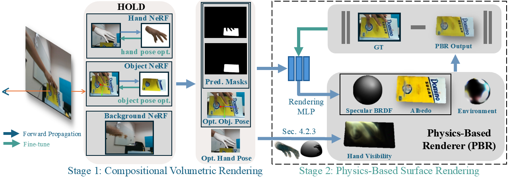

TexHOI: Reconstructing Textures of 3D Unknown Objects in Monocular Hand-Object Interaction Scenes
ICCVM 2025

Abstract
Reconstructing 3D models of dynamic, real-world objects with high-fidelity textures from monocular frame sequences has been a challenging problem in recent years. This difficulty stems from factors such as shadows, indirect illumination, and inaccurate object-pose estimations due to occluding hand-object interactions. To address these challenges, we propose a novel approach that predicts the hand’s impact on environmental visibility and indirect illumination on the object's surface albedo. Our method first learns the geometry and low-fidelity texture of the object, hand, and background through composite rendering of radiance fields. Simultaneously, we optimize the hand and object poses to achieve accurate object-pose estimations. We then refine physics-based rendering parameters—including roughness, specularity, albedo, hand visibility, skin color reflections, and environmental illumination—to produce precise albedo, and accurate hand illumination and shadow regions. Our approach surpasses state-of-the-art methods in texture reconstruction and, to the best of our knowledge, is the first to account for hand-object interactions in object texture reconstruction.